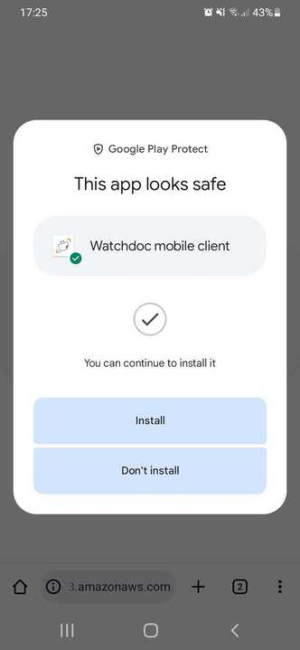
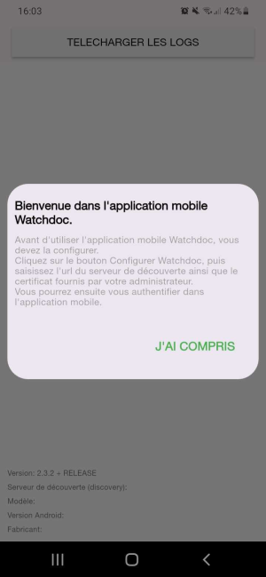
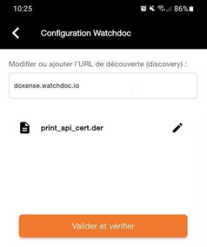

Principe
Si votre organisation ne dispose par d'EMM La gestion de la mobilité d'entreprise (EMM) est un ensemble de services et de technologies conçus pour sécuriser les données de l'entreprise sur les appareils mobiles des employés. Bien qu'elle puisse se manifester de différentes manières, elle consiste généralement en une suite de systèmes et de services de gestion mobile qui protègent la propriété intellectuelle, en des processus spécifiques qui garantissent la sécurité des données et en des systèmes qui doivent s'intégrer à un large éventail de systèmes informatiques d'entreprise afin de répondre à toute une série de préoccupations de l'entreprise.
(Source : https://www.computerworld.com/), vous pouvez mettre l'application WPC for Androit à disposition de vos utilisateurs sous forme d'un fichier apk
La gestion de la mobilité d'entreprise (EMM) est un ensemble de services et de technologies conçus pour sécuriser les données de l'entreprise sur les appareils mobiles des employés. Bien qu'elle puisse se manifester de différentes manières, elle consiste généralement en une suite de systèmes et de services de gestion mobile qui protègent la propriété intellectuelle, en des processus spécifiques qui garantissent la sécurité des données et en des systèmes qui doivent s'intégrer à un large éventail de systèmes informatiques d'entreprise afin de répondre à toute une série de préoccupations de l'entreprise.
(Source : https://www.computerworld.com/), vous pouvez mettre l'application WPC for Androit à disposition de vos utilisateurs sous forme d'un fichier apk Android Package (ou APK, pour (Android Package Kit) est un format de fichier utilisé par le système d'exploitation Android développé par Google. Un APK regroupe un ensemble de fichiers qui permet d'installer une application ou un jeu sur un appareil Android sans avoir à passer par le Google Play.
Le type MIME est application/vnd.android.package-archive.
Source : https://www.frandroid.com/tag/apk dans un espace partagé.
Android Package (ou APK, pour (Android Package Kit) est un format de fichier utilisé par le système d'exploitation Android développé par Google. Un APK regroupe un ensemble de fichiers qui permet d'installer une application ou un jeu sur un appareil Android sans avoir à passer par le Google Play.
Le type MIME est application/vnd.android.package-archive.
Source : https://www.frandroid.com/tag/apk dans un espace partagé.
Une fois ce fichier téléchargé sur son téléphone, l'utilisateur doit configurer WPC avant de l'utiliser. Pour cette configuration, il a besoin :
-
de l'url du serveur Watchdoc chargé de gérer les impressions ;
-
du certificat de la Print API (fichier au format .der.).
Prérequis
Afin de permettre à vos utilisateurs d'installer WPC sur leurs téléphones :
-
enregistrez le fichier app-release.[n°version].apk dans un espace partagé accessible à vos utilisateurs depuis leurs téléphones ;
-
exportez le certificat de la Print API depuis l'interface d'administration de Watchdoc (cf. Exporter le certificat de la Print API) et enregistrez-le également dans un espace partagé accessible à vos utilisateurs ;
-
communiquez à vos utilisateurs la manière d'accéder à ces fichiers et fournissez-leur l'url du serveur d'impression Watchdoc ;
-
préciser à l'utilisateur que son téléphone doit être connecté et qu'il doit avoir accès à l'espace partagé.
Procédure
Pour installer l'apk WPC for Android sur un téléphone :
-
depuis le téléphone, accédez à l'espace partagé et téléchargez le fichier app-release.[n°version].apk ainsi que le certificat (fichier print_api_cert.der) :
-
acceptez la vérification de sécurité effectuée sur le fichier .apk et cliquez sur le bouton d'installation :

-
Une fois l'application installée, un message vous informe que vous devez procéder à la configuration avant de pouvoir utiliser l'application. Pour configurer WPC for Android, vous devez disposer :
-
de l'URL de découverte, c'est-à-dire de l'url du serveur Watchdoc qui vous a été fourni par votre administrateur ;
-
d'un certificat, fichier intitulé print_api_cert.der, également mis à votre disposition par votre administrateur.
-
-
Cliquez sur la mention J'ai compris pour accéder à l'interface suivante :

-
dans l'interface Configuration Watchdoc, saisissez :
- l'url du serveur d'impression Watchdoc (sans https://) ;
- cliquez sur le bouton à droite du champ pour téléchargez le fichier print_api_cert.der mis à disposition dans l'espace partagé :

-
cliquez ensuite sur Valider et vérifier ;
-
quand l'application est validée et vérifiée et que l'interface S'identifier s'affiche, l'installation est terminée
-
Authentifiez-vous et lancez une impression pour vérifier le fonctionnement de WPC for Android.